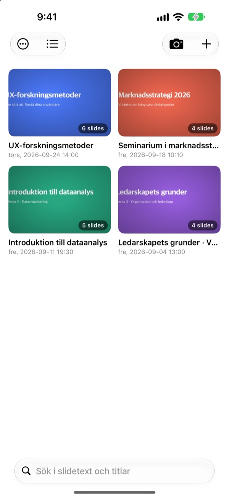
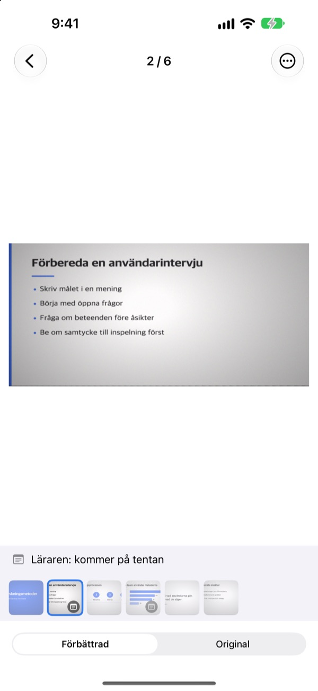
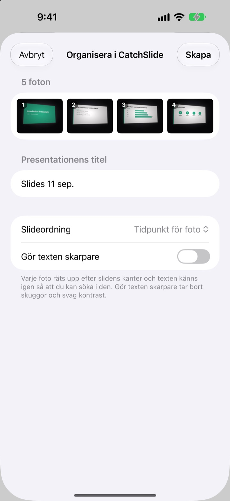
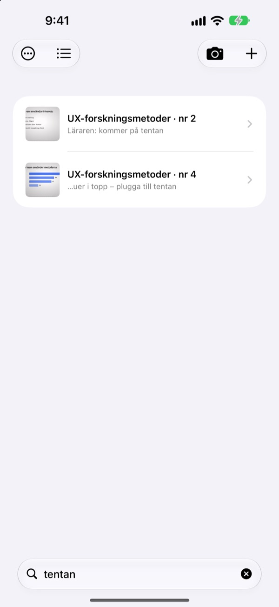

Fotad från sidan.
Sparad rakt framifrån.
Kameran hittar alla fyra hörnen på bilden, rätar upp den och skär bort rummet runt omkring. Bilder du tar i följd hamnar i samma presentation.
Ett köp, alla funktioner. Inget abonnemang, inget konto.

Räta upp den själv
Fotot är taget snett från en sidoplats i föreläsningssalen. Den gröna kanten visar var bildens hörn hittades.
Öppnat bildbiblioteket för att plugga och inte hittat bilden?
Bilder från bakersta raden blir alltid sneda och försvinner bland selfies och kvitton. I en tyst sal räcker slutarljudet för att du ska tveka. CatchSlide fotar ljudlöst, rätar upp varje bild och håller ihop dem per presentation.
Rak i samma stund
Kameran följer bildens fyra hörn i realtid och blir grön när den har dem. Även snett tagen blir bilden uppriktad som om den fotats rakt framifrån, utan bakgrunden.
Inget slutarljud. Slå på Automatisk tagning så tar appen varje ny bild själv och hoppar över suddiga foton.

Foton du redan har, på en gång
Välj flera foton från föreläsningen i Bilder och dela dem med CatchSlide. De rätas upp och sparas som en presentation, i den ordning du tog dem.Gör texten skarpare tar bort skuggor och blek kontrast.

Ett ord räcker
CatchSlide läser texten på varje bild direkt på din enhet. Även veckor senare tar ett enda ord dig tillbaka till rätt bild.
Anteckningar på bilderna är också sökbara. Skriv tenta på några, så är hela tentaplugget en sökning bort.

Kom igång i tre steg
- 1
Öppna kameran
Från kameraknappen i listan, widgeten på hemskärmen eller låsskärmen.
- 2
Få bilden i rutan
När hörnen blir gröna tar du bilden, eller låter automatisk tagning göra det.
- 3
Plugga per presentation
Sök, lägg till anteckningar och exportera en PDF att plugga på.
Det här kan du göra med en presentation
- Inspelning
- Spela in ljud medan du fotar och lyssna på varje bild från det ögonblick du tog den
- Transkribering
- Gör inspelningen till text, visar vad som sades vid varje bild och ingår i sökningen
- AI-sammanfattning
- Sammanfattar presentationen utifrån bildtext och transkribering (iOS 26 eller senare på enheter med Apple Intelligence)
- Studiematerial med en, två eller fyra bilder per sida
- Markdown
- En .zip redo för Notion eller Obsidian
- PowerPoint
- Exportera en .pptx med transkriberingen i talaranteckningarna
- Slå ihop
- Markera flera presentationer och gör dem till en
- iCloud-synkronisering
- Slå på för att se dina presentationer på andra enheter med samma Apple ID. Avstängd från början
- Widgetar
- Öppnar kameran direkt från hemskärmen eller låsskärmen
Textigenkänning, transkribering och AI-sammanfattningar sker på din enhet.
Köp en gång, få allt
CatchSlide
- Ljudlös fotografering, automatisk tagning och upprätning
- Import av flera foton samtidigt från Bilder
- Bilder per presentation, sökning i text och anteckningar
- Inspelning, transkribering och AI-sammanfattning
- Export till PDF, Markdown och PowerPoint
- iCloud-synkronisering och widgetar
Dricks (valfritt)
- Om appen hjälper dig kan du ge utvecklaren lite dricks
- Dricks låser inte upp något. Alla funktioner fungerar ändå
Du hittar det under Min info.
Inget abonnemang och inga betalda tillägg. Se priset i ditt land i App Store.
Vanliga frågor
Hur fotar jag en bild?
Öppna kameran och rikta den mot bilden. När hörnen blir gröna trycker du på avtryckaren. Med automatisk tagning påslagen tas nästa bild av sig själv varje gång den byts.
Hörs något slutarljud?
Nej. Bilden sparas direkt från kameran, så det är ljudlöst i alla länder.
Varför hamnade mina foton i en presentation?
Tar du nästa foto inom 5 minuter efter det förra hör det till samma presentation. Tryck på titeln i listan för att byta namn, och använd Slå ihop presentationer för att foga ihop dem som delats upp.
Kan jag lägga till foton jag redan har tagit?
Ja. Markera dem i Bilder och dela dem med CatchSlide, eller tryck på ＋ i listan och välj Importera från Bilder. De rätas upp och sparas som en presentation i den ordning de togs.
Hörnen hittades fel.
Öppna bilden, välj Justera hörn i menyn ⋯ och dra de fyra hörnen på plats. Identifiera automatiskt letar efter dem igen och Hela bilden använder hela fotot. Originalet sparas alltid, så du kan göra om det när du vill.
Kan jag söka i texten på mina bilder?
Skriv ett ord i sökfältet överst i listan. Sökningen går igenom bildtext, titlar, anteckningar och transkriberingar och hoppar direkt till bilden. Textigenkänningen sker på enheten.
Hur exporterar jag en PDF?
Öppna delningsmenyn i en presentation, välj Exportera som PDF och välj en, två eller fyra bilder per sida. Från delningsbladet sparar du den i Filer eller skickar den till en annan app.
Hur ändrar jag ordningen eller raderar bilder?
Håll fingret på en bild i en presentation och dra den. I samma meny kan du radera eller dela en bild, och med Markera raderar du flera på en gång.
Hur fungerar inspelning och AI-sammanfattning?
Slå på Spela in överst i kameran, så sparar varje bild ljudet från just det ögonblicket. Under Presentationsanteckningar gör Sammanfatta med AI en sammanfattning utifrån bildtext och transkribering. Det kräver iOS 26 eller senare på en enhet med Apple Intelligence.
Var sparas mina bilder och inspelningar?
På din enhet. De laddas bara upp till din egen iCloud om du slår på Synkronisering under Min info, och du behöver inget konto. Läs mer i integritetspolicyn.
Frågor, buggar eller idéer? Skriv till leeo@kakao.com.